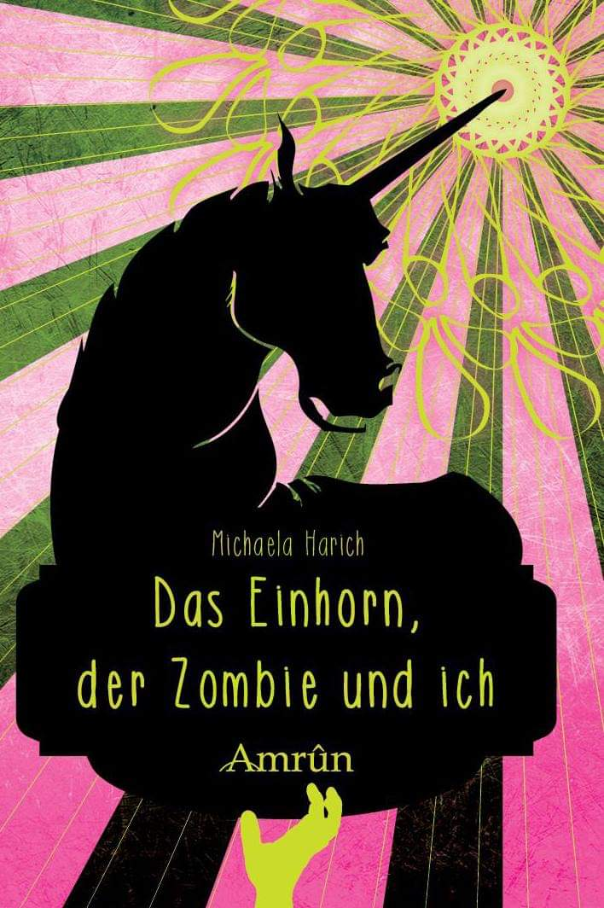
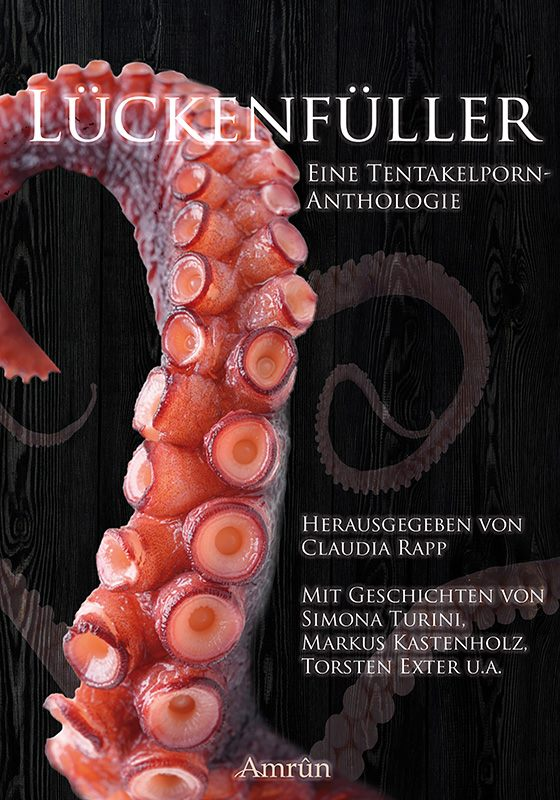
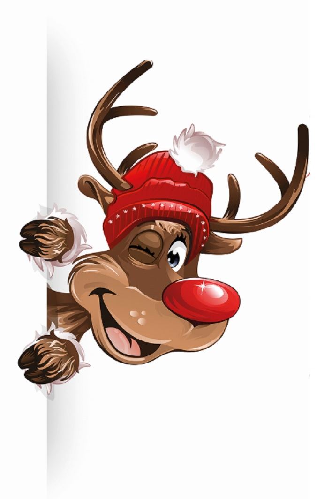

Bisherige Aufführungen
-

Das Einhorn, der Zombie und ich
Es war einmal ein einsamer Millionär, dessen Herz nur darauf wartete, von einer Jungfer erobert zu werden. Eigentlich eine einfache Aufgabe, gäbe es da nicht seinen nervigen Kumpel Chris und die Einhörner. Doch dann klingelt es eines Tages an seiner Tür, und Nicole tritt in sein Leben. Mit einem Mal beginnt er zu hoffen, dass die große Liebe kein Märchen ist und endlich für ihn wahr wird – wäre da nicht die Sache mit dem Zombie …
Wahre Liebe und Einhornzombieerotik zwischen zwei Buchdeckeln – eine nicht ernstgemeinte Novelle von Michaela Harich. Ihr könnt das Buch direkt beim Amrûn Verlag kaufen oder es als eBook bei Amazon erwerben.
-

Lückenfüller. Eine Tentakelporn-Anthologie.
Lovecraft ist tot, aber sein vielarmiges Monster Cthulhu ist lebendiger denn je. Das grausige alte Wesen aus der Tiefe regt sich überall da, wo man nicht mit schleimigen Tentakeln rechnen würde – selbst im amerikanischen Wahlkampf mischt Cthulhu munter mit. Die Autoren haben sich von ihm in einen Abgrund aus Horror und Schrecken, Lust und Leidenschaft, Ironie und Körperflüssigkeiten ziehen lassen. Dieses Buch steckt voll praller Tentakelgeschichten, mal dreckig, mal fies, mal witzig – und fast immer mit einem Augenzwinkern. Der perfekte Lückenfüller eben …
Das Buch gibt es direkt beim Amrûn Verlag oder als eBook bei Amazon .
-

Christmas Stories by Charles Dickens
“Bah! Humbug!” – with these harsh words discards the old miser Ebenezer Scrooge the Christmas time, a time wasted on benevolence instead of financial profits! The most famous Christmas story by Charles Dickens is probably A Christmas Carol. Did the Ghostreaders’ first Christmas session revolve around it?
Bah! Humbug! You discovered with us the forgotten Christmas stories by Charles Dickens. We invited you to celebrate Christmas together with us – and to find out what connects gloomy figures like a morose undertaker, ghosts and goblins to the most peaceful season of the year.